Opening Times
weekdays 9.00 am – 12.00 am, weekends 9.00 am – 1.00 am
Location
Lower Ground Level
Email
ety.dbm.ae@azadea.com
Phone Number
+971 43308899
Our Menus
Take your pick from our menu covering the best from all parts of Italy. From symbolic pasta and
pizza dishes, to delicious meat, fish, and vegetable recipes, as well as delicious fried treats,
there’s something for everyone to enjoy at lunch or dinner. We also offer an indulgent breakfast
menu as well as a special kids menu designed for your little bambino!
Market & Counters
-
 La Pasta Fresca – Fresh PastaEvery day at Eataly, our pastai, or pasta makers, transform simple ingredients into intricate pasta shapes inspired by the rich traditions of every Italian region using simple high-quality ingredients: water, flour, and eggs.
La Pasta Fresca – Fresh PastaEvery day at Eataly, our pastai, or pasta makers, transform simple ingredients into intricate pasta shapes inspired by the rich traditions of every Italian region using simple high-quality ingredients: water, flour, and eggs.
-
 La Panetteria – Fresh BreadA real Italian bakery where the bread is made right before your eyes. Every day, Eataly’s bakery produces a variety of freshly-baked bread with our state of art oven, mother yeast from Italy, and naturally ground flour from Mulino Marino.
La Panetteria – Fresh BreadA real Italian bakery where the bread is made right before your eyes. Every day, Eataly’s bakery produces a variety of freshly-baked bread with our state of art oven, mother yeast from Italy, and naturally ground flour from Mulino Marino. -
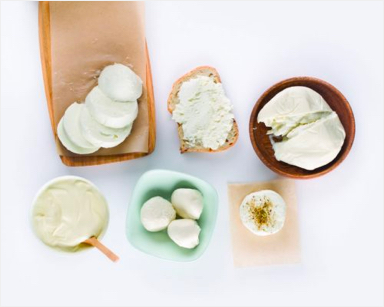I Salumi and I Formaggi – Cured Meats and CheesesA real Italian bakery where the bread is made right before your eyes. Every day, Eataly’s bakery produces a variety of freshly-baked bread with our state of art oven, mother yeast from Italy, and naturally ground flour from Mulino Marino.
-
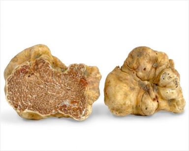Il TartufoIn the corner dedicated to truffles, you can enjoy one of the most prestigious products of Italian gastronomy. You can eat it year-round, served with all types of dishes: appetizers, pasta, meat, eggs, cheese and desserts. Visit us to learn more about the king of Italian cuisine!
-
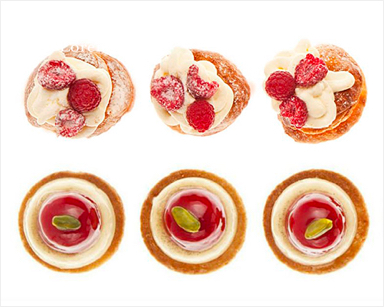Pasticceria – Fresh PastriesEvery day, the Eataly pastry team creates typical Italian pastries, cakes, and cannoli that are as beautiful as they are delicious. All of Eataly’s dolci are made in-house daily using the freshest seasonal ingredients.
-
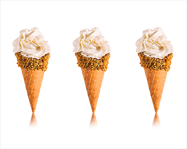GelatoThe unique ice cream of Gelateria Alpina Lait is the brainchild of chef Ugo Alciati. This creamy ice cream takes its name from its main ingredient ‘làit’ which in the Piedmont dialect means ‘milk’. The milk used to make this ice cream is purely from the mountains, and only high quality, carefully selected ingredients are added.
-
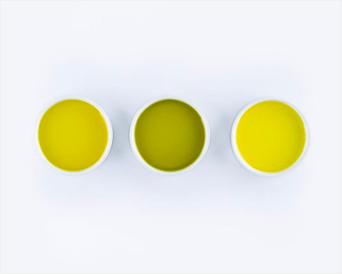Extra Virgin Olive OilIn the corner dedicated to truffles, you can enjoy one of the most prestigious products of Italian gastronomy. You can eat it year-round, served with all types of dishes: appetizers, pasta, meat, eggs, cheese and desserts. Visit us to learn more about the king of Italian cuisine!
-
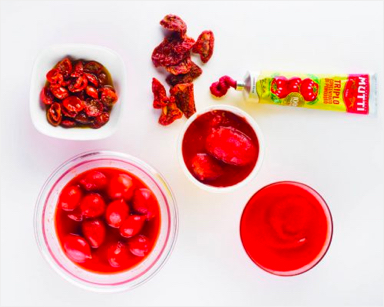Sauces and CondimentsOur sauces and condiments preserve the highest quality ingredients to perfection. Our tomato sauces are expertly cooked and ready for your table, available in various textures – crushed, pureed or whole to preserve them for your kitchen.
-
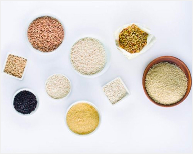Pasta, Rice, GrainsThough its ingredients are often as simple as flour and water, pasta is an art that spans shapes, sizes, and regions. Every shape offered at Eataly is extruded through a bronze mold and air-dried for 24 to 48 hours to ensure pasta of the perfect consistency to stick to sauce. Eataly’s shelves are stocked with a wide selection of dry pasta; Arborio rice for the perfect risotto; and other grains such as farro, barley and chickpea.
-
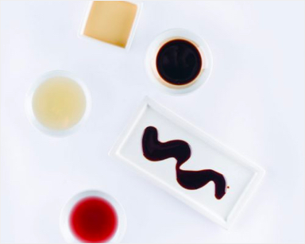VinegarOur shelves contain a wide variety of vinegars produced by high-quality companies such as Giusti and Aceto Modena. Our selection ranges from red to white vinegar, up to aged balsamic vinegar from Modena.
-
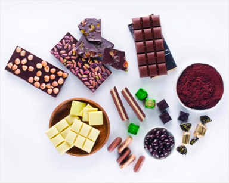Sweets and ChocolatesEataly chooses to work with the best brands Italy has to offer for our selection of sweets and chocolates. Each of the artisan producers have got a rich history and use the highest quality regional ingredients, such as PGI hazelnuts from Langhe, in Piedmont. Eataly has partnered with premium Italian chocolateir Venchi to bring you the most delicious individually wrapped pralines and sweets and also variety of gift boxes for all occasions.
-
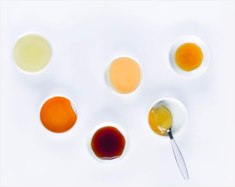Preserves and HoneyThe tradition of creating preserves and honey is rich in Italy. You’ll find many varieties at the store that you can enjoy spread on toast in the morning, in desserts or combined with cheeses and cured meats.
-
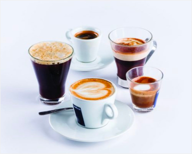Tea and CoffeeWe carefully source the highest quality coffee roasters and herbal teas from sustainable producers, including espresso, whole roasted beans and flavorful blends, as well as therapeutic tea infusions to warm up your days.
-
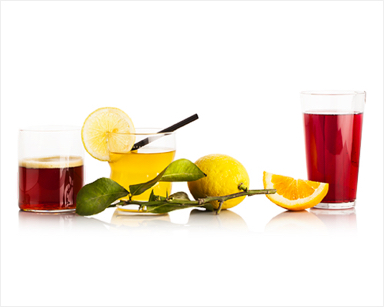Non-alcoholic Beverages and WaterEataly only serves beverages prepared with natural sources. From tasty and natural aerated drinks like Mole Cola, to mineral water and freshly-picked fruit juices and organic milk, there are no artificial flavours, colours, additives or preservatives used in our drinks.
-
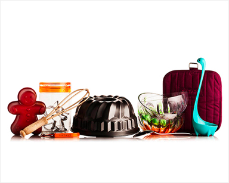HomewareAt Eataly, we believe that good food deserves good design, so we strive to offer customers the best housewares and utensils to add that distinctive Italian touch. We have partnered with some of the best Italian housewares brands, bringing Italian flair to your kitchen counter and your table, too!